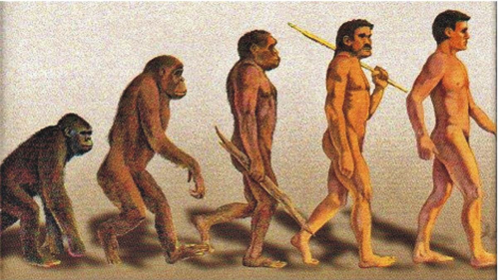

HISTORIA UNIVERSAL
Profesor de curso: Diego Morales
El Origen del Hombre
El suceso más antiguo que puede datarse en el universo que conocemos se remonta a unos 12.000 millones de años. En este primer instante, toda la energía (y todo el espacio) del universo se encontraba concentrada en un punto, que fue el origen de una gran explosión (big bang). Durante los primeros segundos, la temperatura era de más de un billón de grados y toda la energía se hallaba en forma de radiación.
Durante los primeros 10 segundos se formaron las partículas elementales y al cabo de 15 minutos se formaron núcleos de hidrógeno y helio, en proporción de cuatro a uno. Unos 10.000 años después la temperatura había descendido a unos 100.000 grados y se formaron los primeros átomos de hidrógeno. Al cabo de unos 400.000 años el hidrógeno empezó a condensarse en nubes (las futuras estrellas), las cuales a su vez se agrupaban en cúmulos mayores (las futuras galaxias).
Hace 11.000 millones de años la temperatura del universo era de unos 3.000 grados, y se formaron las primeras estrellas: la gravedad hizo que los núcleos de muchas nubes de hidrógeno alcanzasen temperaturas elevadas, del orden de 15 millones de grados, lo que permitió la fusión del hidrógeno en helio, proceso que origina la emisión luminosa de las estrellas. Cuando las estrellas agotan el hidrógeno del núcleo son capaces de seguir generando energía fundiendo a su vez el helio en materiales más pesados. De este modo, en los núcleos de las primeras estrellas se formaron todos los elementos químicos que actualmente hay en la Tierra.
En las estrellas más grandes, este proceso genera cada vez más energía, hasta que llega un momento en que la gravedad no es capaz de contenerla y la estrella explota lanzando al espacio gran parte de su materia. Esto sucede a una edad diferente según la masa de cada estrella. Las explosiones de estrellas llenaron el espacio de nuevas nubes de gas (esta vez relativamente rico en toda la gama de elementos químicos), a partir del cual se formaron nuevas estrellas, las llamadas estrellas de segunda generación, entre las cuales se encuentra el Sol.
El Sol empezó a brillar hace unos 5.000 millones de años. En esta época el universo se había enfriado ya a unos 100 grados bajo cero. Existen muchas teorías sobre cómo se formaron los planetas del sistema solar, pero fuera como fuera, la edad de la Tierra se estima en unos 4.600 millones de años. Al principio era una masa incandescente cuya superficie tardó relativamente poco en enfriarse.
Parte de la atmósfera se licuó y se crearon así los mares y océanos. La composición química de la atmósfera y de los océanos era muy diferente de la actual: No existía la capa de ozono que actualmente nos protege de los rayos ultravioleta, la atmósfera soportaba una intensa actividad eléctrica. Estas condiciones fomentaron la formación en las aguas de compuestos químicos cada vez más complejos y variados: compuestos orgánicos que culminarían con la aparición de formas de vida.
